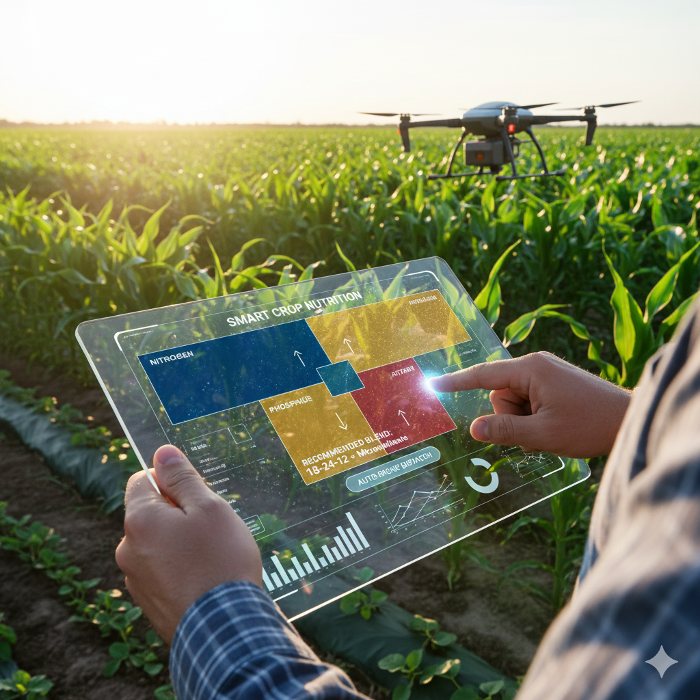

Smart Fertilizer Recommendations Results

Fill details and click Predict.
🌱 Tips & Tricks for Better Farming
Soil Testing: Test soil every 6 months.
Drip Irrigation: Saves 40% water.
Crop Rotation: Improves soil health.
Pest Control: Use pheromone traps.
Weather Check: Avoid spraying before rain.